tVault
소프트웨어 설치·업데이트·라이선스를 한곳에서.
새 버전은 서명해서 안전하게 올리고, 고객사 서버는 고객이 승인한 장비만 정한 시각에 업데이트합니다.
누가 어떤 버전을 쓰는지, 라이선스는 언제 끝나는지 고객사별로 한눈에 봅니다.
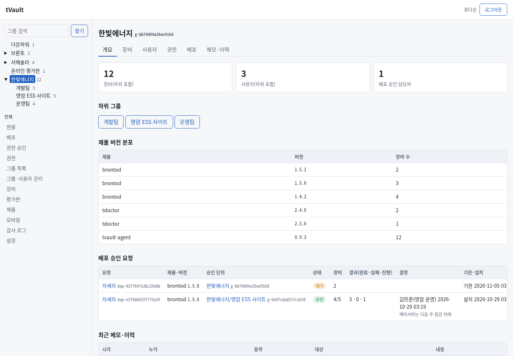
현장 소프트웨어, 이런 고민을 덜어 드립니다
현장 서버와 운영 PC 가 늘어날수록 설치·업데이트·라이선스 관리는 사람 손으로 감당하기 어려워집니다.
새 버전을 내면 모든 서버가 한꺼번에 바뀐다
고객사 운영 서버가 업무 시간에 갑자기 재시작되면 곤란합니다. tVault 는 링(배포 단계)으로 내부 → 파일럿 → 고객사 순서로 넓혀 가고, 고객사는 승인한 장비만 업데이트합니다.
고객사마다 원격 접속해 직접 설치한다
설치 키가 든 설치 파일 하나를 실행하면 등록·서비스·첫 설치까지 끝납니다. 그 뒤 업데이트는 에이전트가 하고, 실패하면 스스로 되돌립니다.
누가 무엇을 쓰는지, 라이선스가 언제 끝나는지 모른다
고객사·부서·사용자·장비마다 권한(에디션·기간·만료 동작)을 주고, 장비별 실제 적용 권한과 설치 버전을 한 화면에서 봅니다.
평가판이 끝나도 계속 쓴다 · 복사해서 쓴다
라이선스는 서명된 토큰과 PC 고유 값으로 확인합니다. 복사본·기간 끝·회수는 프로그램이 스스로 막고, 퇴사자의 개인 PC 는 삭제까지 지시합니다.
업데이트했는지 전화로 확인한다
승인한 장비가 모두 끝나면 담당자에게 장비별 업데이트 시각이 든 결과 메일이 갑니다. 꺼져 있는 장비가 있으면 중간 보고부터 보냅니다.
인터넷이 끊긴 폐쇄망 현장
서명된 묶음 파일 하나로 반입합니다. 검증 절차는 온라인과 같고, 오프라인 기한 안에서는 서버 없이도 라이선스가 유지됩니다.
릴리스와 배포를 나눕니다
릴리스는 "쓸 수 있는 버전"을 올리는 일, 배포는 "누가 언제 받을지" 정하는 일입니다. 관리자가 링마다 목표 버전을 정하고 [다음 링으로]를 눌러 넓혀 갑니다.
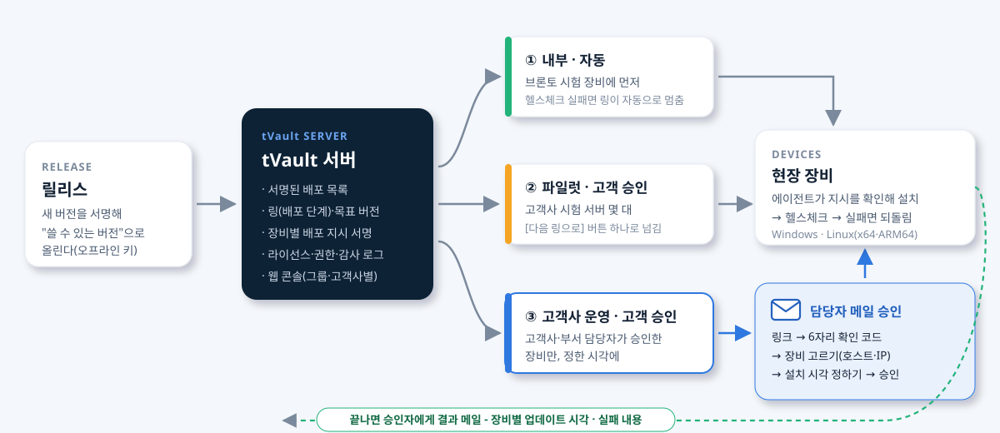
릴리스
빌드한 패키지를 오프라인 키로 서명해 올립니다. 아직 어떤 장비도 바뀌지 않습니다.
링 목표 정하기
내부 시험 장비 링에 새 버전을 정합니다. 설치 뒤 동작 확인에 실패하면 그 링이 자동으로 멈춥니다.
고객 승인
고객사 링으로 넘기면 담당자에게 승인 메일이 갑니다. 담당자가 장비와 설치 시각을 골라 승인합니다.
결과 확인
장비 보고로 결과를 모아 승인자에게 메일로 보내고, 웹 콘솔에 남깁니다.
tVault 가 하는 일
고객사 중심 웹 콘솔 NEW
왼쪽 트리에서 고객사(그룹)를 고르면 그 고객사의 장비·사용자·권한·배포·메모가 탭으로 모입니다. 부서(하위 그룹)까지 포함해 보여 주므로 고객사 단위로 업무를 처리하기 쉽습니다.
- 고객사·부서 트리 - 접고 펴기, 이름 검색, 하위 포함 장비 수
- 개요: 장비·사용자 수, 제품별 버전 분포, 진행 중인 배포 승인
- 장비 탭: 부서별로 묶고 호스트 이름·IP·설치 버전·마지막 접속
- 스크립트를 쓰지 않는 화면 + 2단계 인증(비밀번호 + OTP)

선별 배포 - 링(배포 단계) NEW
제품마다 기본 동작을 정합니다. 유지면 링에 지정된 장비만 업데이트하고, 따라감이면 새 버전을 바로 따릅니다. 링에는 고객사·부서·사용자·장비를 대상으로 넣고 목표 버전과 방식(자동 / 고객 승인)을 정합니다.
- 가장 구체적인 대상의 링을 따른다(장비 > 사용자 > 부서 > 고객사)
- [다음 링으로] 버튼 하나로 단계를 넓힌다
- 링의 목표를 옛 버전으로 바꾸면 그 장비만 되돌아간다
- 설치 뒤 동작 확인 실패(되돌림)면 링을 자동으로 멈춘다
- 서버도 막는다 - 목표가 아닌 패키지는 내려주지 않는다
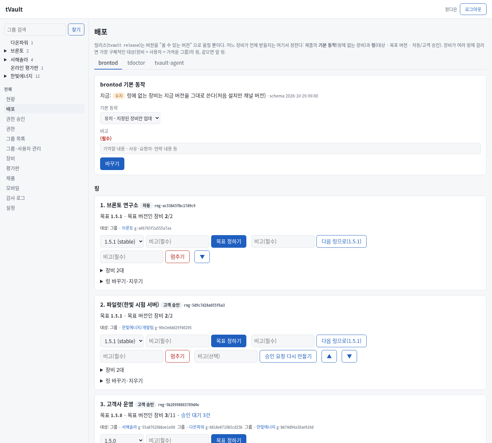
고객사 담당자의 메일 승인 NEW
고객 승인 링에 새 버전을 정하면 고객사(또는 부서)의 승인 담당자에게 메일이 갑니다. 담당자는 로그인 없이 링크를 열고, 그 메일로 받은 6자리 확인 코드를 넣은 뒤 업데이트할 장비와 설치 시각을 골라 승인하거나 보류합니다.
- 장비 표: 부서별로 묶고 호스트 이름 · IP · 장비 이름 · 지금 버전
- 장비별 선택, 부서 단위 제외 - 100대가 넘어도 구분이 쉽다
- 설치 시각: 지금 또는 날짜·시각(야간 작업 시간)
- 링크는 담당자마다 따로, 기한 7일, 한 번 결정하면 끝
- 담당자가 없거나 전화로 확인한 경우 관리자가 비고와 함께 대신 승인
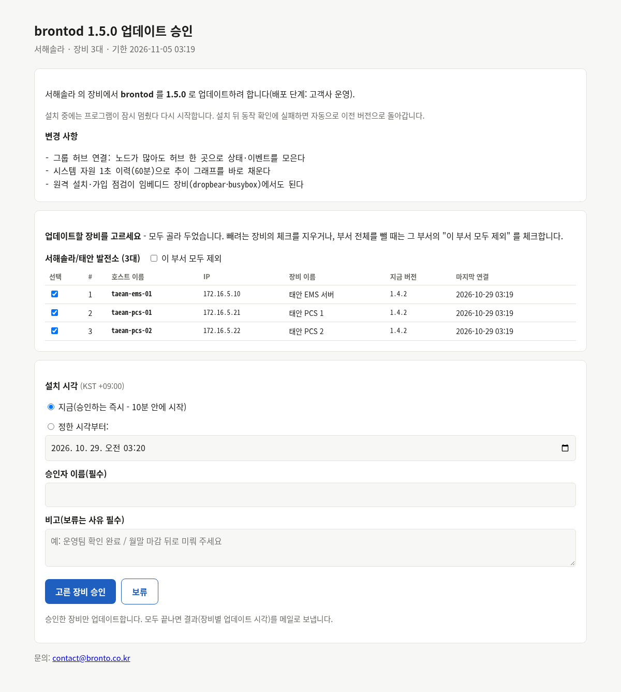
장비별 결과와 결과 메일 NEW
승인한 장비의 업데이트가 모두 끝나면 승인자에게 결과 메일을 바로 보냅니다. 장비마다 이전 → 지금 버전, 결과, 업데이트 시각이 들어갑니다. 꺼져 있는 장비가 있으면 정한 시간(기본 1시간) 뒤에 중간 보고를 보내고, 모두 끝나면 최종 보고를 다시 보냅니다.
- 완료 · 실패 · 진행 중 수와 실패 내용
- 같은 링크를 다시 열면 결과 표가 보인다
- 관리자 알림 주소로 보류·기한 지남·결과 사본
- 중간 보고 시간·승인 기한·다시 알림을 설정에서 조정
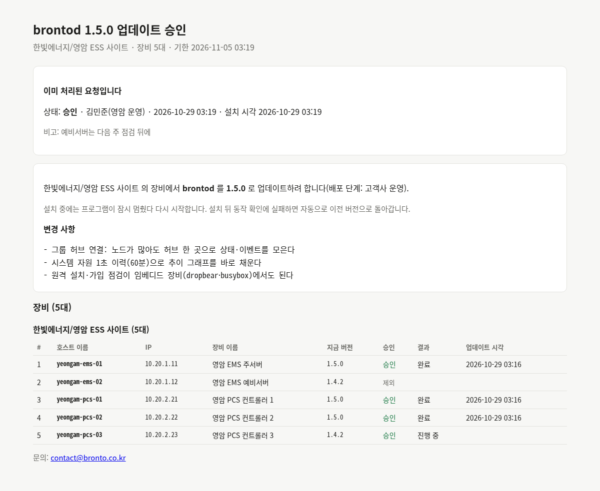
한 번에 설치 · 자동 업데이트 · 자동 되돌림
설치 키가 이름에 든 설치 파일을 실행하면 장비 등록, 서비스 등록, 첫 설치까지 끝납니다. 이후 에이전트가 10분마다 서명을 확인하고 목표 버전으로 맞춥니다.
- 설치 → 동작 확인(헬스체크) → 실패면 이전 버전으로 자동 롤백
- 보존할 데이터 폴더는 업데이트·삭제 때 남긴다
- Windows: 알림 영역 아이콘에서 실행·닫기·업데이트·삭제
- 사용자 선택 업데이트: 지금·나중에·건너뛰기(필수 버전은 건너뛸 수 없음)
- 변경 사항(릴리스 노트)을 알림에 그대로 보인다
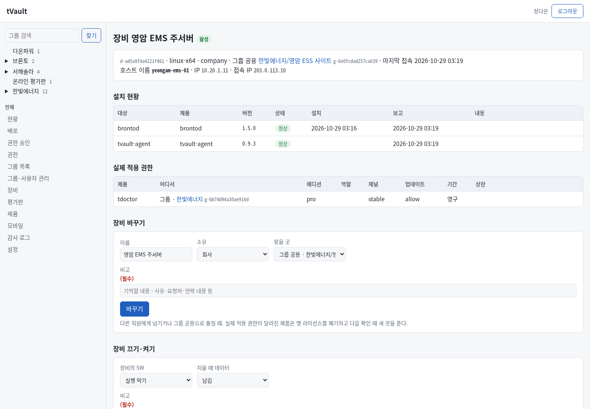
라이선스 · 권한
제품마다 에디션(Basic · Pro 등)과 기능·역할을 정의하고, 고객사·부서·사용자·장비에 권한을 줍니다. 권한은 장비마다 서명된 라이선스 토큰으로 내려가 프로그램이 직접 확인합니다.
- 기간: 영구 · 구독 · 기간제 · 평가판(승인 필요)
- 만료 때 동작: 계속(업데이트만 중지) · 에디션 낮춤 · 실행 차단 · 삭제
- 오프라인 기한 - 서버가 없어져도 산 만큼은 쓴다
- PC 고유 값으로 복사본을 가린다 · 회수는 폐기 목록으로
- 퇴사 처리: 권한 회수, 회사 장비는 공용으로, 개인 장비는 삭제 지시
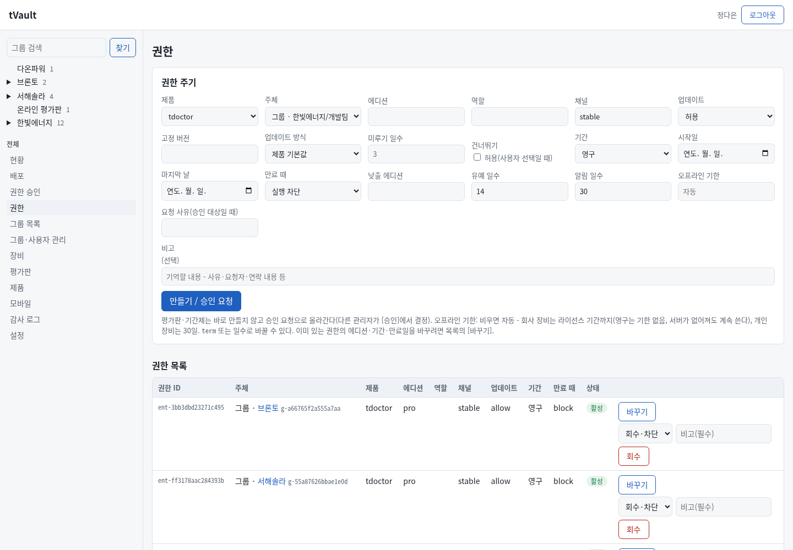
모든 작업에 비고 · 감사 로그 NEW
회수·장비 끄기·배포 목표·대신 승인처럼 되돌리기 어렵거나 고객에게 영향이 있는 작업은 비고(사유·요청자·연락 내용)를 꼭 남깁니다. 고객사 화면의 메모·이력 탭에서 메모와 작업 기록을 한눈에 봅니다.
- 고객사 메모 - 통화·방문·약속 내용
- 해시 체인 감사 로그 - 나중에 고칠 수 없다
- 승인 요청: 결정한 사람·메일·IP·고른 장비·설치 시각
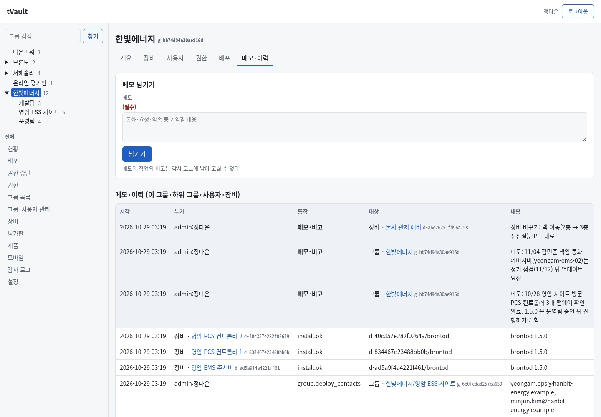
서명으로 지키는 배포
업데이트 경로를 노리는 공격에 대비해 역할별 키로 서명합니다. 장비는 처음 받은 신뢰 기점(root) 하나만 믿고, 서버 주소가 바뀌어도 서명이 없으면 아무것도 설치하지 않습니다.
- 릴리스 키는 서버 밖(오프라인)에 - 서버가 털려도 가짜 패키지 불가
- 패키지 길이·해시 확인, 옛 목록으로 되돌리는 공격 방지
- 장비별 배포 지시도 서명 - 서명된 버전 중에서만 고른다
- 장비 키로 서명한 요청만 받는다 · 분실 장비는 끄기
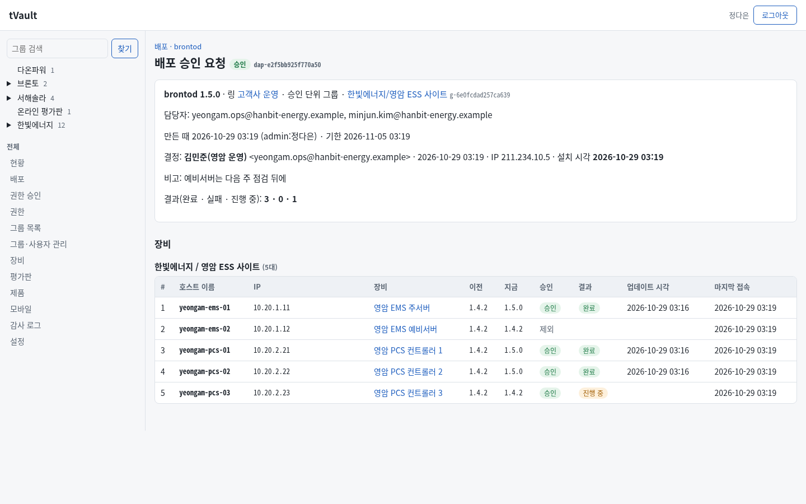
화면 더 보기
모두 데모 데이터로 찍은 실제 화면입니다. 누르면 크게 봅니다.
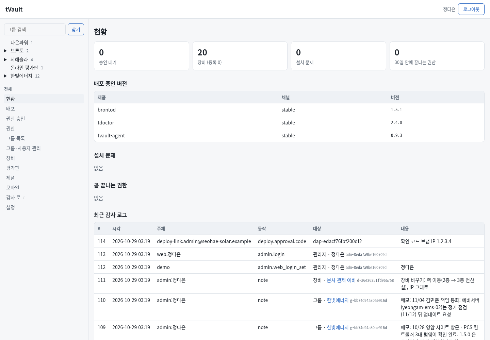
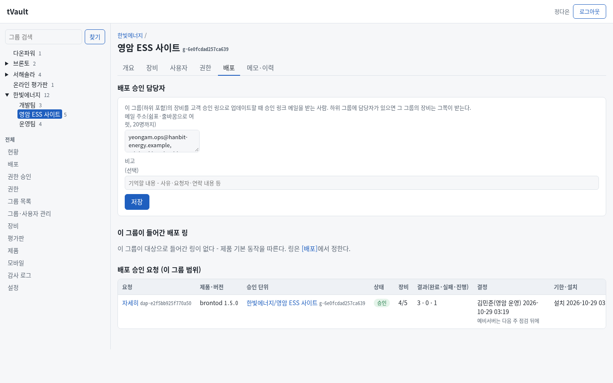
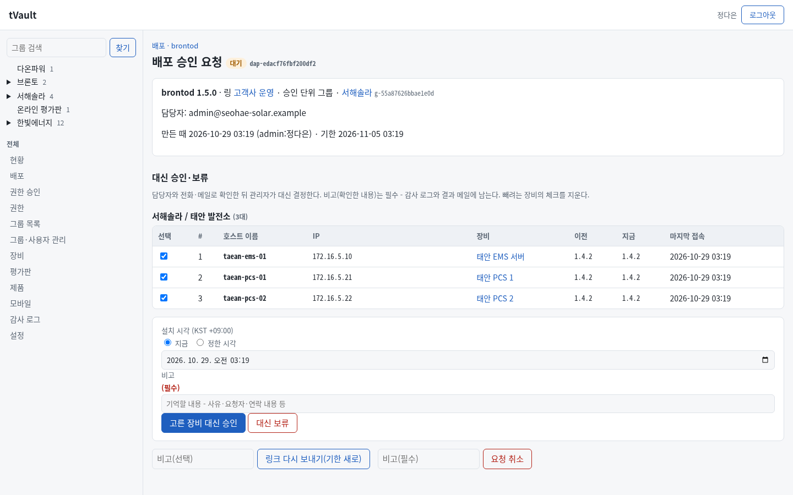
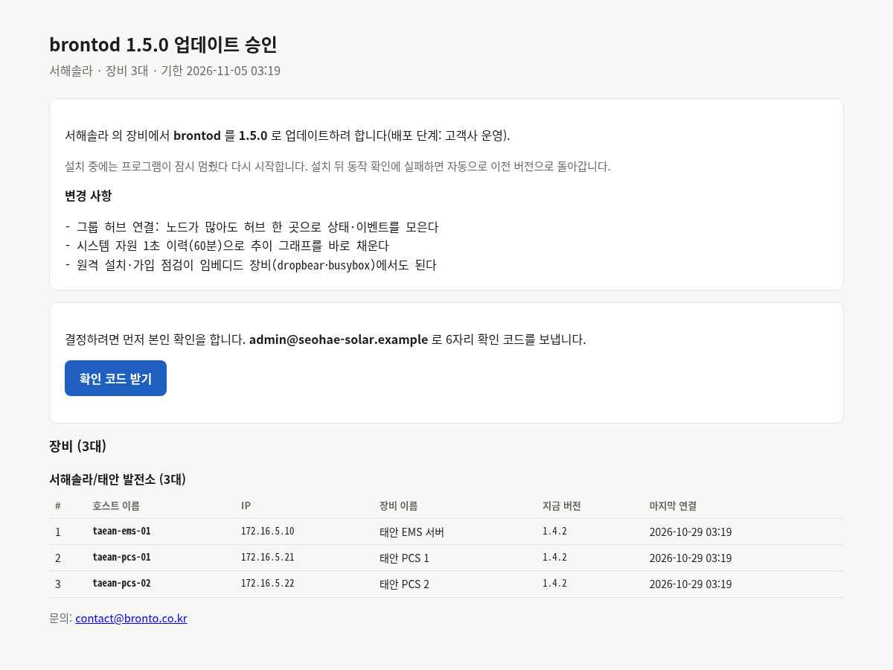
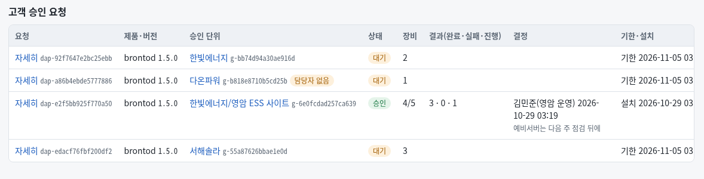
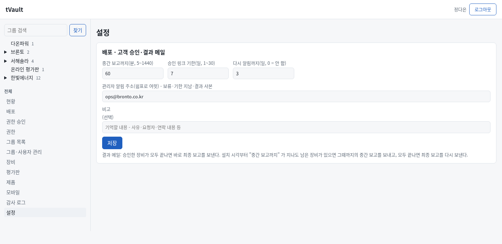
휴대폰에서도
웹 콘솔과 승인 화면은 휴대폰 폭에 맞춰 보입니다. 출장 중에도 승인하고 결과를 확인합니다.
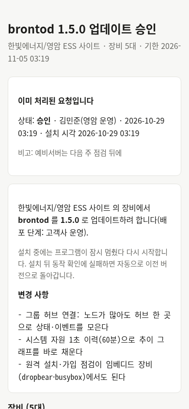
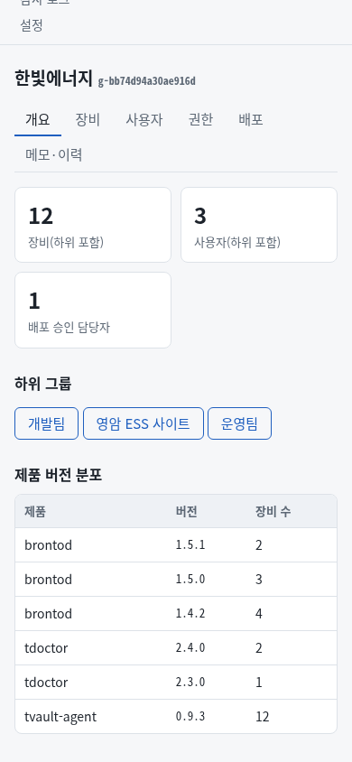
구성과 지원 환경
| tVault 서버 | Linux · PostgreSQL(기본) 또는 SQLite(작은 납품용) · 패키지는 파일 저장소 · 메일 발송 내장(DKIM 서명) |
|---|---|
| 에이전트 | Windows(서비스 + 알림 영역 아이콘) · Linux x64 · ARM64(systemd) · 에이전트 스스로도 업데이트 |
| 웹 콘솔 | 고객사 트리·탭, 배포·승인·권한·장비·평가판·감사 로그 · 비밀번호 + OTP 2단계 인증 · 스크립트 없는 화면 |
| CLI | 패키지 만들기·release(서명)·root 키 갱신·묶음 반입 등 서명 키가 필요한 일은 CLI 에서만 |
| 배포 | 제품별 기본 동작(유지·따라감) · 링(대상·목표·자동/고객 승인·멈춤) · 장비별 서명 배포 지시 · 서버의 내려받기 집행 |
| 고객 승인 | 담당자별 메일 링크 · 6자리 확인 코드 · 장비별 선택(호스트 이름·IP) · 설치 시각 · 결과 메일(중간·최종) |
| 라이선스 | 에디션·기능·역할 · 영구·구독·기간제·평가판 · 만료 동작 · 오프라인 기한 · PC 고유 값 · 폐기 목록 |
| 설치 경로 | 설치 키 링크 → 설치 파일 실행 → 등록·서비스·첫 설치 · 폐쇄망은 서명된 묶음 파일 |
| 함께 쓰는 제품 | tOps(brontod · tdoctor) 배포와 tdoctor Basic/Pro 라이선스 · 고객사 서버 납품(고객사 자체 서버)도 가능 |
자주 묻는 질문
새 버전을 올리면 고객사 서버가 바로 바뀌나요?
아닙니다. 제품의 기본 동작이 "유지"면 링에 지정된 장비만 바뀝니다. 고객 승인 링은 담당자가 승인한 장비만, 정한 시각부터 바뀝니다.
담당자 메일이 다른 사람에게 전달되면요?
링크만으로는 결정할 수 없습니다. 링크를 받은 메일 주소로 6자리 확인 코드를 보내고, 그 코드를 넣어야 결정 화면이 열립니다. 담당자에서 빠진 주소의 링크는 막힙니다.
업데이트하다 문제가 생기면요?
설치 뒤 동작 확인에 실패하면 장비가 스스로 이전 버전으로 돌아가고, 그 링을 자동으로 멈춰 다른 장비로 번지지 않게 합니다. 관리자가 원인을 확인한 뒤 비고를 남기고 다시 켭니다.
인터넷이 안 되는 현장도 되나요?
네. 서명된 묶음 파일로 반입하고, 라이선스는 오프라인 기한 안에서 서버 없이 유지됩니다. 고객사 안에 tVault 서버를 따로 두는 납품 구성도 있습니다.
tOps 나 tems 없이 tVault 만 쓸 수 있나요?
네. 매니페스트(설치 위치·서비스 명령·동작 확인 방법)만 있으면 어떤 프로그램이든 tVault 로 배포·업데이트·라이선스 관리를 할 수 있습니다.
배포와 라이선스, 이제 한곳에서
현장 수와 운영 방식을 알려주시면 실제 화면으로 운영 흐름을 보여드립니다.